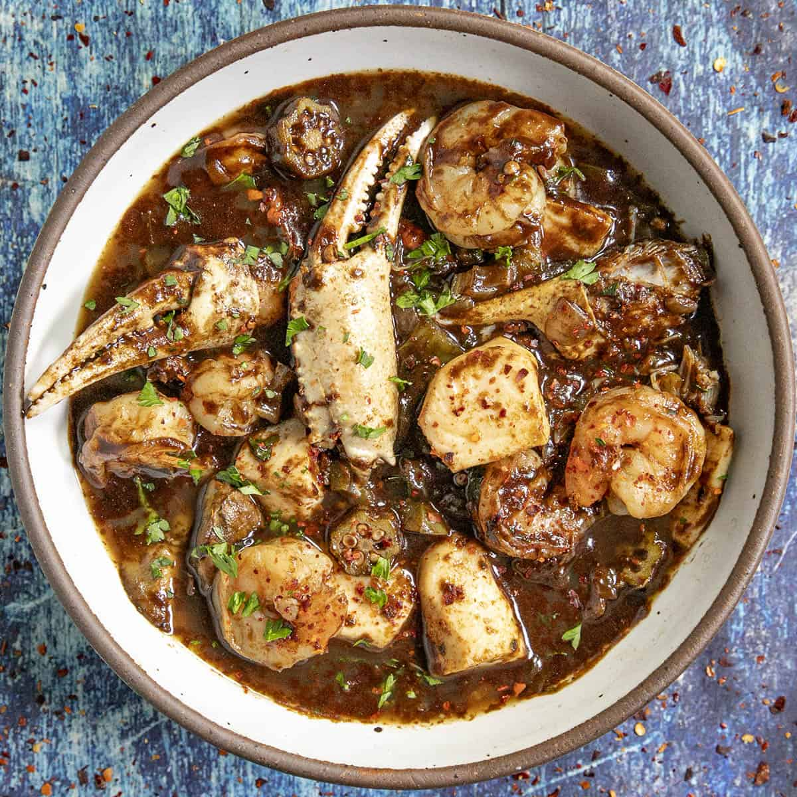
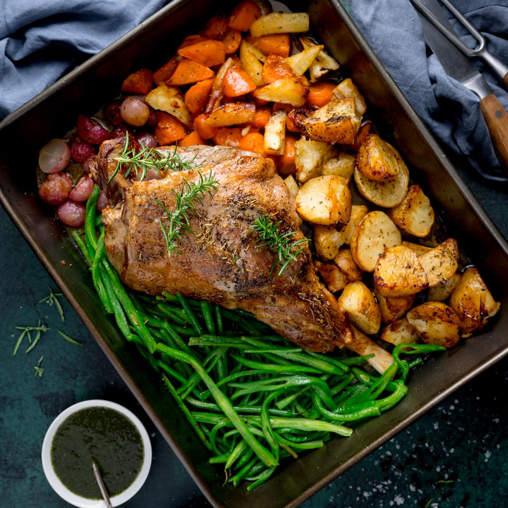
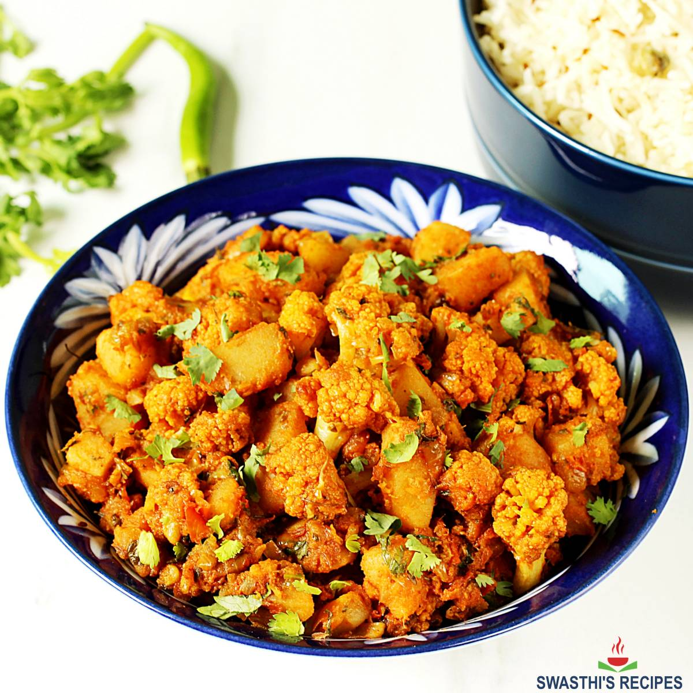

My Favorite Cuisines
a few of the fares connected to foods (and cultures) I adore
- Creole
- Japanese
- Korean
- Mediteranian
- Indian
My Favorite Dishes
if eating these is wrong, I don't wanna be right
- Gumbo
- Ramen
- Bulgogi
- Roasted Lamb and Vegetables
- Aloo Gobi



Recipes that BRING IT!
prepare for tastebud domination *insert spirit fingers here*